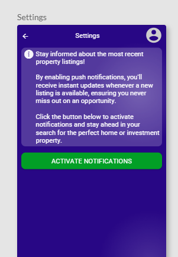

Push Notifications
Les Push Notifications sont des messages envoyés directement à un appareil mobile, même lorsque l'application n'est pas ouverte ou en cours d'exécution.
Disponible depuis le plan Enterprise.
Elles sont un outil essentiel pour garder vos utilisateurs informés en temps réel, leur rappeler des événements importants, ou les inciter à revenir dans l'application.
Cette fonctionnalité est disponible aussi bien sur iOS que sur Android, offrant une communication directe avec vos utilisateurs sur les deux plateformes principales.
Suivez ces étapes pour activer et configurer les push notifications pour votre projet, que ce soit sur iOS ou Android.
Les push notifications sont bien prises en charge sur Android, mais leur fiabilité peut fluctuer en fonction du fabricant et de la version du système d'exploitation.
Activation des Push Notifications
Pour activer les push notifications dans votre application, allez dans la section Settings (Paramètres) puis dans la section Push Notifications et enfin cliquez sur le bouton Enable (Activer).
Activation des Push Notifications dans l'app mobile
Les push notifications nécessitent également d'être activées dans l'application mobile pour chaque utilisateur. Pour cela, vous devrez inclure un écran dédié de votre choix dans l'application, qui demandera aux utilisateurs l'autorisation de recevoir des notifications.

Créez un écran dédié dans votre application qui explique aux utilisateurs pourquoi ils doivent autoriser les notifications.
- Ajoutez un bouton pour permettre aux utilisateurs de s'abonner aux notifications.
- Utilisez l'action Subscribe, elle permet à l'utilisateur de s'inscrire pour recevoir des notifications. Cette action demandera automatiquement la permission à l'utilisateur.
L'action Subscribe possède deux propriétés optionnelles : User et Channel. Ces propriétés vous permettent de configurer la façon dont les notifications sont reçues, en ciblant un utilisateur spécifique ou un groupe d'utilisateurs.

Détails des propriétés :
- User : Si cette propriété est définie, cela signifie que l'utilisateur actuel recevra les notifications personnalisées qui lui sont destinées.
- Channel : Si vous souhaitez envoyer des notifications à un groupe d'utilisateurs, vous pouvez définir cette propriété avec un nom de canal (par exemple : abonnés premium, visiteurs, utilisateurs internes, ...). Tous les utilisateurs abonnés à ce canal recevront les notifications.
- Paramètres vides : Si les deux propriétés sont laissées vides, l'utilisateur sera abonné pour recevoir toutes les notifications générales.
Envoyer des notifications aux utilisateurs
Une fois que vos utilisateurs sont abonnés, vous pouvez leur envoyer des notifications en fonction de leur abonnement à un canal ou individuellement.
L'utilisateur devra avoir installé l'application pour pouvoir recevoir les push notifications.
Voici les actions que vous pouvez utiliser pour envoyer des notifications :
- Send to all (Envoyer à tous) : Utilisez cette action pour envoyer une notification à tous les utilisateurs qui ont activé les push notifications.
- Send to channel (Envoyer à un canal) : Avec cette action, vous pouvez envoyer des notifications uniquement aux utilisateurs abonnés à un certain canal. Cela permet de segmenter les notifications selon des groupes d'utilisateurs spécifiques.
- Send to user (Envoyer à un utilisateur) : Utilisez cette action pour envoyer une notification à un utilisateur spécifique qui a activé les notifications.
Exemple d'utilisation des notifications
- Si vous souhaitez informer tous vos utilisateurs d'une mise à jour, utilisez Send to All.
- Pour envoyer une notification uniquement à vos utilisateurs premium, définissez un canal nommé "premium" et utilisez Send to Channel avec ce canal.
- Pour notifier un utilisateur particulier à propos d'une action dans l'application, utilisez Send to User et précisez par exemple son email.